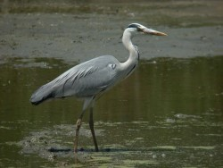

몸길이 91∼102cm이다. 한국에서 보는 왜가리과에서 가장 큰 종이다. 등은 회색이고 아랫면은 흰색, 가슴과 옆구리에는 회색 세로줄무늬가 있다. 머리는 흰색이며 검은 줄이 눈에서 뒷머리까지 이어져 댕기깃을 이룬다. 다리와 부리는 계절에 따라 노란색 또는 분홍색이다. 한국에서는 흔한 여름새이며 번식이 끝난 일부 무리는 중남부 지방에서 겨울을 나기도 하는 텃새이다. 못·습지·논·개울·강·하구 등지의 물가에서 단독 또는 2∼3마리씩 작은 무리를 지어 행동한다. 주로 낮에 활동한다. 날 때는 목을 S자 모양으로 굽히고 다리는 꽁지 바깥쪽 뒤로 뻗는다. 이동할 때는 밤에도 난다.
